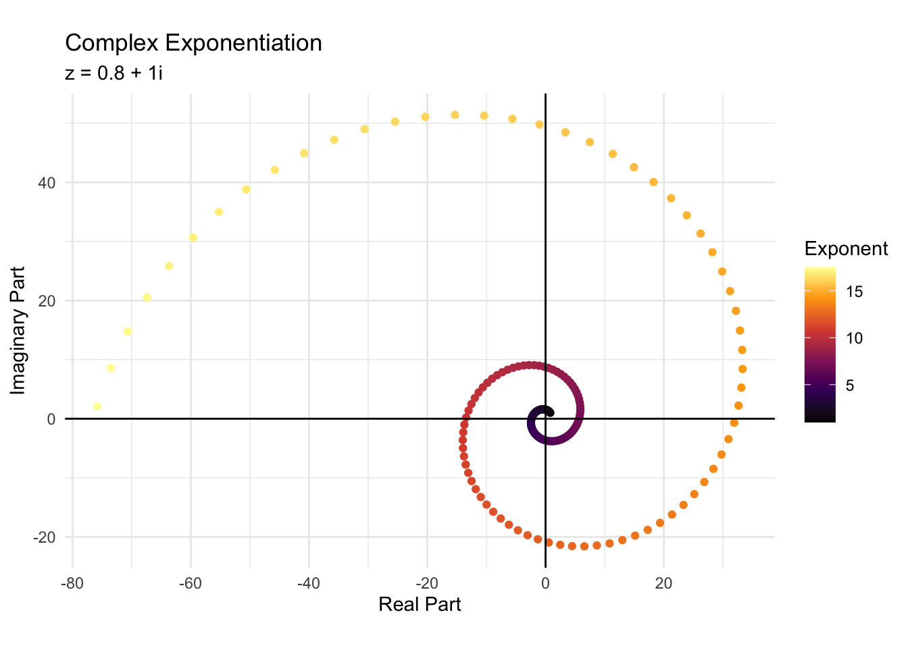

[1] 103 R 101
- R competence: read R expressions written by others (allowing the language to serve a communicative purpose), and write R expressions that are readable and align with best practices within the open source R community.
- describe R’s data types and the use of each: strings, numerics (floating point “doubles”, integers, and complex numbers), logicals, datetimes, and factors
- describe R’s data structures and the use of each: including, vectors (1-dimensional arrays), matrices (2-dimensional arrays), arrays (more than 2-dimensional arrays), lists (key-value pairs), data frames, and tibbles
This tutorial is adapted from a fabulous youtube video by Very Normal, which you should definitely watch.
3.1 Names and Assignment
By far the most common thing you will do in R is assigning values to names. This is done with the assignment operator <-. You can also use = for assignment, but it is less common in R. The <- operator assigns the value on the right to the name on the left. Whenever you want to retrieve the value, you can use the name.
There are restrictions to the names that objects can have in R. Names cannot start with a number. Names are case-sensitive, meaning that X is not the same thing as x.
Names can contain letters, numbers, periods, and underscores. They cannot contain spaces.
2020_datais not a valid name because it starts with a numberdata 2020is not a valid name because it contains a spacex2020_datais a valid namedata.2020anddata_2020are valid names.
To the greatest extent possible, you should try to use names that are informative and short. This makes your code easier to write (because of the short name) and easier to read (because of the informative name).
That is what you need to write R code that will run. But what about writing R code that is readable? This is where the tidyverse style guide comes in. The tidyverse style guide is a set of conventions that the tidyverse team has developed to make R code more readable. The style guide is not a set of rules that you must follow, but it is a set of conventions that you should follow if you want your code to be readable by others.
The tidyverse style guide has a lot of rules, but here are a few of the most important naming conventions:
- names should only contain lowercase letters, numbers, and underscores
- variable names should generally be nominal
- function names should generally be verbal
Finally, the last thing you want to avoid is overwriting the name of a function. If you assign a value to T, you will no longer be able to use it as a shortcut for TRUE. If you assign a value to mean, you will no longer be able to use that function to calculate the mean of a vector. You really need to be cautious about this, which I understand may be difficult as you learn. It’s a good habit to develop, and it will save you from having to debug this sort of error, which is often a difficult and time-consuming process.
3.2 data types
class: the function that you use when you want to know what type of data is stored in an R object.
3.2.1 Numbers
Integers are specified with an L:
without the L, the integer will be interpreted as numeric. Numeric data are numbers that have a decimal point (in this case .0, which R does not print):
Numeric is a super-ordinate category that contains doubles and integers. Numeric data is stored as doubles (i.e., numbers that have decimal points). You can see how a value is stored on the machine (i.e., to see that numeric values are stored as doubles, always) using the typeof function.
As you can see, the class numeric are stored as doubles (i.e, using 64 bits), whether the value being stored is an integer or not. Values with the class integer are stored as integers (i.e., using only 32 bits).
Double Precision?
Computers store numbers in sequences of 0s and 1s. A single position in this sequence, which could be occupied by either a 0 or a 1 is called a bit. A number stored in this way is called a binary number. Here is an example of an 8-bit binary number:
00101101
Decoding this number is a straightforward matter. Each position in the sequence represents a power of 2. The rightmost position represents \(2^0\), and the leftmost position (in an 8 bit number) represents \(2^7\). The number encoded is a weighted sum of the powers of 2. 00101101 is decoded as:
\[ \text{number} = \sum_{i=0}^{7} \text{bit}_i \times 2^i \]
Omitting the 0s, 00101101 works out to be:
\[ (1 \times 2^2) + (1 \times 2^4) + (1 \times 2^5) + (1 \times 2^7) = 4 + 16 + 32 + 128 = 180 \]
You might notice a couple of things about this scheme of an 8-bit number that I have put forth. This scheme can only represent integers (a result of using integer multiplication with powers of 2, which are always integers). You may also have noticed that one could represent 0 in this format, but never -1. All of the integers decoded in this manner will be positive.
You might use a sign bit at the beginning of the sequence to fix this second problem. When the sign bit is 1, the integer is negative; when it is 0, the integer is positive. The new decoding scheme using a sign bit would be represented like this:
\[ \text{number} = (-1)^{bit_0} + \sum_{i=0}^6 bit_{i+1} \times 2^i \]
Again ignoring the 0s (except for the sign bit), 00101101 works out to be:
\[ (-1)^0 + (1 \times 2^1) + (1 \times 2^3) + (1 \times 2^4) + (1 \times 2^6) = 1 + 2 + 8 + 16 + 64 = 91 \]
We could now easily represent -91 by changing the sign bit: 10101101.
This scheme still can’t represent non-integers, and our 8-bits are quite limiting. The largest and smallest numbers we can represent are positive and negative 127 (01111111 and 11111111, respectively). The limiting factor is, of course, the limited number of bits we have (only 8), and the limited amount of information those 8 bits can encode (see information theory for a formalized, quantitative way to think about information in bits - developed by Claude Shannon at Bell Labs).
For historical reasons, a 32 bit number is called a single precision number. A 32 bit number encoded as described above is a 32 bit integer. In R, integers are stored as 32 bit numbers. This means that the range of integers R can store goes from -2,147,483,647 (-2.1 billion; 11111111111111111111111111111111) to 2,147,483,647 (2.1 billion; 01111111111111111111111111111111)1.
Double precision floating point numbers (doubles) are 64 bit numbers with decimal points. The two schemes I outline can only encode integers. Encoding decimal values requires a more complicated scheme that I have no intention of fully explaining (as I have for 8 and 32 bit integers). Here is a Wikipedia page if you care all that much.
Briefly, the leftmost bit is still a sign bit, interpreted in the same we we interpreted it above. The next 11 bits represent an exponent (encoded in binary). 11 bits can encode integers from 0 to 2047. To achieve negative exponents (needed for numbers between 0 and 1 and therefore numbers between -1 and 0), the exponent is subtracted from 1023. Therefore, the range of values the exponent can take covers all the integers from -1023 to 1024. The rightmost 52 bits represent a sum of fractions that is computed as a weighted sum, very similarly to how the integers were calculated from 7 bits above. The only difference is that each bit represents multiplication by a negative power of 2. This results in a weighted sum of fractions, where only the negative powers of 2 corresponding to positions with 1s in them are included in this sum.
In any case, the real referent of double precision floating point number is the number of bits the computer uses to store the number. Single precision floating point numbers (i.e., numbers with decimals) are stored according to a similar sign bit, exponent, fraction scheme, only with 32 bits. The benefit to having more bits is having more precision. There are, however, computational costs, and in many cases (especially if you are only using a 64 bit computer, as you are), using more than 64 bits exponentially increases the amount of time the computer will take to complete a single computation.
Complex Numbers
The other type of numeric data in R is complex numbers, which are so very cool and beautiful, but which you are never realistically going to use and which I will not, therefore, bore you with the details of. However, complex numbers are numbers with a real part (which is multiplied by \(1\)) and an imaginary part (which is multiplied by \(i = \sqrt{-1}\)). The value of the complex number is the sum of the real and imaginary parts. You can store a complex number like this:
I’ll just quickly show you the seq function so you can see the effect of complex exponentiation. We can use the seq function to get a sequence of numbers from from to to, by increments of by.
[1] 1.0 1.2 1.4 1.6 1.8 2.0 2.2 2.4 2.6 2.8 3.0 3.2 3.4 3.6 3.8
[16] 4.0 4.2 4.4 4.6 4.8 5.0 5.2 5.4 5.6 5.8 6.0 6.2 6.4 6.6 6.8
[31] 7.0 7.2 7.4 7.6 7.8 8.0 8.2 8.4 8.6 8.8 9.0 9.2 9.4 9.6 9.8
[46] 10.0 10.2 10.4 10.6 10.8 11.0 11.2 11.4 11.6 11.8 12.0We can then raise the complex number z to each of these exponents to see the effect of complex exponentiation.
Now we can look at the pretty spiral that complex exponentiation results in:

Isn’t that just gorgeous? Complex numbers can also spiral inwards:
I drew a unit circle in that plot for a reason. As you can see in the plot below, the first complex number we used (\(0.8 + 1i\)) corresponds to a point outside of the unit circle on the complex plane. The point corresponding to \(z = 0.15 + 0.85i\), by contrast, lies within the unit circle. This is why the the first complex number spirals outwards, while the spiral of the second complex number spirals inwards. The unit circle is the boundary between the two types of spirals.

3.2.1.1 Arithmetic
R has a number of arithmetic operators, many of which you will be familiar with.
The unary operators are - and +, which negate and do nothing, respectively. You would use - when saving a negative number.
These are five binary operators that are used frequently in the arithmetic common in public schools:
+: addition-: subtraction*: multiplication/: division^: exponentiation2
Exponentiation and division offer two useful examples to demonstrate Inf and -Inf values. Anything divided by infinity is zero, which is more of a convention in mathematics than a thing that you calculate out (which would take a log time). This division by infinity resulting in zero rule is coded into R:
R also recognizes that anything to a negative infinite power is zero, and that anything (including an infinite value) to the zeroth power is equal to 1.
In addition to addition, subtraction, multiplication, division, and exponentiation, R has a few other arithmetic operators that you may not be as familiar with:
%%: modulus (remainder of division)%/%: integer division (division that rounds down to the nearest whole number)
These functions revolve around division. Take the number 73. When you divide 73 by 10, you get 7 with a remainder of 3. In this case, 7 is the integer divisor of 73 divided by 10, and 3 is the modulus of 73 divided by 10.
These functions are part of modular arithmetic, which winds up being incredibly important to computer science and cryptography, as well as to many fields of mathematics (like number theory).
Rounding, Truncation, etc.
R has 5 function used to round numbers:
ceiling(): rounds to greatest and nearest integer (will increase absolute value of a positive number and decrease the absolute value of a negative number)floor(): rounds to least and nearest integer (will decrease the absolute value of a positive number and increase the absolute value of a negative number)trunc(): truncates the decimal part of a numberround(): rounds to the nearest integer (or to a specified number of decimal places)signif(): rounds to a specified number of significant digits3
Relational Logic
Relational logic is used to compare two values. The result of a relational logic operation is a logical value, either TRUE or FALSE. The relational operators in R are:
- “==”: is the thing on the left identical to the thing on the right?
- “!=”: not identical
- “<”: less than
- “<=”: less than or equal to
- “>”: greater than
- “>=”: greater than or equal to
That might seem relatively straightforward. I raise you the following complication:
That’s really odd, isn’t it? The way R stores the two numbers (see the first callout about double precision) means that these two numbers are different by a very small amount. How much, you ask?
As I said, a very small amount. This is why you should never use == to compare floating point numbers. Instead, you should use the all.equal() function, which will compare two numbers to a specified tolerance.
3.2.2 Characters
Characters are fairly self explanatory. You can tell R that something is a character by putting it in quotes.
You can also convert something from another class to a string. When you do so, R will begin to print it in quotes:
[1] "integer"[1] 124[1] "character"[1] "124"See another example of the quotes with logical data:
There is one type of data that does not encapsulate in quotes when it is converted to a character. This is the NA or missing value, which R will essentially always represent as NA, regardless of it’s class.
3.2.3 Logical Data
Logical data is also simple to understand. Neither TRUE nor FALSE are unfamiliar to the reader.
It’s useful to note what happens when you turn logical data into numeric data. TRUE becomes 1 and FALSE becomes 0.
You can also write TRUE as simply T and FALSE as F.
Tip 3.1: Logical Arithmetic
The : operator is used to create a sequence of numbers, starting at the number on the right, and continuing by adding 1 until the number on the left is reached.
If we wanted to find only the numbers that are less than or equal to 4, we could use the < operator (remember this list includes 0 at the beginning).
If we wanted to see how many of the numbers are less than or equal to 4, we could use the sum() function.
If you just wanted to see if any or all of the numbers are less than four, you could use the any() or all() functions.
3.2.4 Factors
There is an excellent chapter about factors in R for Data Science.
Factors combine integers and strings, and they are useful for categorical data (which is exceptionally common in psychology research). One categorical variable is the day of the week. I am going to store all of the days of the week in a vector called days.
Here is a vector of days of the week. We’ll use it as our data.
# draw a random sample of 100 days of the week
data <- sample(days, 100, replace = TRUE)
# print the first 15 days
head(data, n=15) [1] "sunday" "thursday" "wednesday" "monday" "saturday" "saturday"
[7] "saturday" "saturday" "monday" "wednesday" "saturday" "saturday"
[13] "thursday" "monday" "tuesday" Using a factor, rather than a character, is useful for sorting purposes. Sorting our character days results in a list that is in the wrong order.
Days of the week is a good candidate for a factor because there are a fixed number of known days of the week. We can convert the vector days to a factor by using the factor() function.
[1] sunday thursday wednesday monday saturday saturday saturday
[8] saturday monday wednesday saturday saturday thursday monday
[15] tuesday
Levels: friday monday saturday sunday thursday tuesday wednesdayAs you can see, failing to supply factor levels results in the levels being sorted in the same meaningless way as before. We can fix this by supplying the levels in the order we want them to appear.
[1] sunday thursday wednesday monday saturday saturday saturday
[8] saturday monday wednesday saturday saturday thursday monday
[15] tuesday
Levels: monday tuesday wednesday thursday friday saturday sunday[1] 7[1] "monday" "tuesday" "wednesday" "thursday" "friday" "saturday"
[7] "sunday" [1] 7 4 3 1 6 6 6 6 1 3 6 6 4 1 2You may want sunday to be the first day of the week. You can do this by releveling the factor
[1] sunday thursday wednesday monday saturday saturday saturday
[8] saturday monday wednesday saturday saturday thursday monday
[15] tuesday
Levels: sunday monday tuesday wednesday thursday friday saturdayYou can also reverse factors.
[1] sunday thursday wednesday monday saturday saturday saturday
[8] saturday monday wednesday saturday saturday thursday monday
[15] tuesday
Levels: saturday friday thursday wednesday tuesday monday sundaySometimes you will want to change the labels for a factor. You can accomplish this with fct_recode. The new labels are on the left, and the old labels are on the right. Notice that the order of the labels in fct_recode does not change the ordering of the factors levels.
data <- fct_recode(data,
"mon" = "monday",
"tue" = "tuesday",
"wed" = "wednesday",
"thu" = "thursday",
"fri" = "friday",
"sat" = "saturday",
"sun" = "sunday",)
head(data, n=15) [1] sun thu wed mon sat sat sat sat mon wed sat sat thu mon tue
Levels: sat fri thu wed tue mon sunYou might also want to collapse the levels of a factor into a set of super-ordinate labels, like “workday” and “weekend”. You can do this with fct_collapse.
data1 <- fct_collapse(data,
workday = c("mon", "tue", "wed", "thu", "fri"),
weekend = c("sat", "sun"))
head(data1, n=15) [1] weekend workday workday workday weekend weekend weekend weekend workday
[10] workday weekend weekend workday workday workday
Levels: weekend workdayThe fct_lump function will keep the most common n levels and lump the others into a new level called “Other”. This is particularly helpful if you have categorical data with a lot of very small categories.
[1] sun thu Other mon sat sat sat sat mon Other sat sat
[13] thu mon tue
Levels: sat thu tue mon sun Other“Other” looks strange here because its the only level with an upper case letter. As with any of the functions I show you, you can look at the help page for the function to see what arguments it takes. The fct_lump function takes an argument (other_level) that allows you to specify the name of the new level.
[1] sun thu ??? mon sat sat sat sat mon ??? sat sat thu mon tue
Levels: sat thu tue mon sun ???
Generating Levels
Sometimes you need to generate repetative factor levels (e.g., for a repeated measures design, or for a truth table). Our truth table will have 4 propositions: R, P, D, and R. Therefore our truth table will have 81 rows (because each proposition can either be true, false, or gay and we have four propositions; \(3 ^4 = 81\)).
The gl function generates a factor with up to n levels, each repeated k times.
The real clincher comes in the form of the labels argument. This allows you to specify the labels for each level.
[1] true true true false false false gay gay gay
Levels: true false gayWe can also (for our truth table) use the length argument to make sure that all of our vectors are the 81 elements long that we need them to be. This is what I need for my truth table.
3.2.5 Coersion and Checking
Here is a list of the data types you’ve seen thus far:
- integer
- numeric
- complex
- character
- logical
- factor
Sometimes you want to check that the class of a variable is what you expect if to be (especially before you try to do something that only one type can do, like division). You can use the is.* functions to check the class of a variable (replacing * with the appropriate type).
You can also coerce one type of data into another, although this is sometimes risky. Coercing something into a character is usually safe, but coercing something into a type like numeric or logical can cause errors. Often R will create NA values and produce a warning, as shown below.
3.3 Data Structures
3.3.1 Vectors
A vector is a one dimensional array of elements of the same type (e.g., all characters, all numerics). In R, essentially everything is a vector if you analyze it at a fine enough level of detail. You can create a vector with the c() function4.
Generating Sequences
A far easier way to generate the vector above would be to use the : operator, which is described in Tip 3.1.
Look at the help page of the seq() function by typing ?seq in the console. seq takes arguments from, to, by, and along, which I will highlight here. We could recreate our vector with the following code:
You could provide only a from and a by and a length to get the same sequence
You could also go backwards:
If you want a sequence that is the same length as another vector, you could use the along argument.
The rep() function is used to repeat a value a certain number of times.
You don’t just have to repeat single values. You can repeat vectors as well.
The each argument determines how many time each element in the vector is repeated each time there is a repetition.
There is no reason not to use the each and times arguments at the same time.
You can also specify how many times each element is repeated in each repetition. I specify cat to repeat five times, dog once, and fish twice.
You can name elements in a vector by using the names() function. This is particularly useful for counts.
A B C D F
101 28 57 4 2
Subscripting
You can subset a vector by using square brackets. You can subset by index, with the index starting at 1 (not 0).
We can also subset based on another vector, selecting whichever indexes you like.
You can use negative indexes to exclude certain elements.
You can also subset based on logicals. This is particularly useful for filtering data.
vectors are very typical in data science and statistics. Take, for example, the heights of all the characters in Star Wars (in cm).
Luke Skywalker C-3PO R2-D2
172 167 96
Darth Vader Leia Organa Owen Lars
202 150 178
Beru Whitesun Lars R5-D4 Biggs Darklighter
165 97 183
Obi-Wan Kenobi Anakin Skywalker Wilhuff Tarkin
182 188 180
Chewbacca Han Solo Greedo
228 180 173
Jabba Desilijic Tiure Wedge Antilles Jek Tono Porkins
175 170 180
Yoda Palpatine Boba Fett
66 170 183
IG-88 Bossk Lando Calrissian
200 190 177
Lobot Ackbar Mon Mothma
175 180 150
Arvel Crynyd Wicket Systri Warrick Nien Nunb
NA 88 160 Where in the vector is the greatest height and where is the lowest? Let’s sort the vector and then view the first 3 and last 3 elements in the sorted version.
There is a problem here, even if it’s not immediately apparent. Sorting, by default, will remove all the NA values from the vector. We can check that elements were removed by comparing the length of the sorted and the unsorted vectors; the sorted vector is smaller.
[1] 87[1] TRUELet’s try sorting again, but this time we will tell R what to do with the NA values using the na.last argument. By setting it to TRUE, we put all the NAs at the end of the vector.
heights2 <- sort(heights,
decreasing = TRUE,
na.last = TRUE)
# verify that heights2 is the same length as the original data
length(heights2) == length(heights)[1] TRUEYarael Poof Tarfful Lama Su
264 234 229 The tallest character is Yarael Poof (with a height of 264 cm), and
Poe Dameron BB8 Captain Phasma
NA NA NA Wicket Systri Warrick Ratts Tyerel Yoda
88 79 66 Yoda has the smallest height (66 cm). We could also have achieved these conclusions using the min or max functions, but there’s a problem. The result we get is not Yoda and Yarael Poof; it’s NA.
Many vector functions have a na.rm argument which tells R to do the computation while ignoring all missing values. Setting this argument to TRUE is typically required to produce a numerical result (e.g., R won’t compute a mean for a vector with an NA value). In the case of min and max
A large range of descriptive statistics are available with built-in functions.
[1] 14143[1] 174.6049[1] 180# get the first, second (median), and third quartiles
quantile(heights,
probs = seq(from = 0.25,
to = 0.75,
by = 0.25),
na.rm = TRUE)25% 50% 75%
167 180 191 [1] 66 264[1] 1209.242[1] 34.774163.3.1.1 Correlation, Variance, and Covariance
These functions are incredibly important (at least in principle) to a lot of frequentist statistics. They take 2 numeric vectors, an x and y; or just a single matrix or data frame.
# x and y are perfectly negatively correlated (r=-1)
x <- 1:5
y <- 5:1
# computing the covariance, removing na values
var(x,
y,
na.rm = TRUE)[1] -2.5# this is an equivalent computation of covariance
cov(x,
y,
use = "na.or.complete",
method = "pearson")[1] -2.5[1] -20Co-variances are typically standardized into correlations before they are interpreted. You can use the cor function to get a correlation coefficient calculated according to the methods outlined by "pearson", "kendall", and "spearman". We will calculate Pearson’s \(r\), which is standardized number (between -1, indicating perfect negative correlation, and 1, indicating perfect positive correlation).
3.3.1.2 Random Sampling
R has a function called sample that is useful for generating a random sample of data, provided with some probabilities. For example, if you wanted to simulate the roll of a die, you could take a random sample (of size 1) from the sequence of numbers from 1 to 6:
Often you will want a sample with a size larger than 1. You can use the replace argument to allow for repeated sampling, as would be the case in 3 repeated rolls of a die.
You can also use the prob argument to specify the probability of each outcome. For example, if you wanted to simulate a weighted die, you could use the following probabilities:
R also allows you to generate random numbers from a variety of distributions - this is the r* series of functions (where * is the name of a distribution - see ?distributions for more information). For example, to generate 5 random numbers from a normal distribution with a mean of 0 and a standard deviation of 1, you could use the following code:
Each distribution also has an associated d, p, and q function. The d function gives the density of the distribution at a given point, the p function gives the cumulative distribution function of the distribution at a given point, and the q function gives the quantile of the distribution at a given probability.
The difference between d and p is easiest to show graphically.
I showed the quantile function above. the q series distribution functions are used to calculate quantiles. For example, to calculate the 0.95 quantile of the standard normal distribution, you could use the following code:
If we wanted specific quantiles, we should specify them as the first argument. Here I select a variety of probabilities that show the empirical rule - about 68% of the data should be within 1 standard deviation of the mean, 95% within 2, and 99.7% within 3.
3.3.2 Lists
Lists are a very flexible data structure in R. The most simple lists can be though of as vectors with obligatorily named elements (elements in vectors can be named, but not obligatorily so). You can create a list with the list function, and access elements with the $ operator.
What’s neat about lists, compared to vectors, is that they can store multiple types of data (which vectors cannot). For example, you could store a vector, a matrix, and a data frame in a single list.
# creating a list with a string, a vector, a matrix, and a list
my_list <- list(a = "hello", b = 2:-1, c = matrix(1:4, nrow = 2), d = my_list)
my_list$a
[1] "hello"
$b
[1] 2 1 0 -1
$c
[,1] [,2]
[1,] 1 3
[2,] 2 4
$d
$d$a
[1] 1
$d$b
[1] 2
$d$c
[1] 3You can access elements of a list with the $ operator, or with double square brackets [[ ]]. The double square brackets are useful when you want to access elements programmatically.
3.3.3 Data Frames and Tibbles
Data frames are the most common data structure in R. A data frame is nothing more than a collection of vectors of the same length. This might initially seem quite a strange definition I have just provided, but stay with me. The data.frame is the closest correspondent to a spreadsheet. It stores data in rectangular form (i.e., in a table with rows and columns). The tidy data framework tells us that each of the columns in the table must represent a single variable and each row a single observation. The variables are each represented by a vector of values. The entire data frame is constructed by putting the vector for each variable side-by-side. Like this:
Hadley Wickham’s response to the data.frame is the tibble, which essentially the same exact data structure. The biggest difference between a data.frame and a tibble is the way that they print in an R console - tibbles are more human-readable (unfortunately, I cannot demonstrate this difference here). Similarly to above, we could create a tibble using the tibble function.
3.3.4 Other Data Structures
There are two more base R data structures that I want to show you, but we will make much less use of them. For our purposes, we will primarily be using tibbles.
The first is a matrix. A matrix is a two-dimensional array that stores data of the same type (almost always numeric). You can create a matrix with the matrix function. Matrices are frequently used in linear algebra, and we will be using them for that purpose later (when and if we get to latent semantic analysis, which heavily employs matrices as a data structure). Tibbles are more flexible than matrices because they can store data of different types. For lots of reasons, however, computers are really fast at doing linear algebra, so matrix operations can often be more efficient than tibble operations.
[,1] [,2] [,3]
[1,] 1 3 5
[2,] 2 4 6 [,1] [,2] [,3]
[1,] "a" "d" "g"
[2,] "b" "e" "h"
[3,] "c" "f" "i" Finally, and this is the worst, there is a data type in R that is just called an array. You may think: wait a minute, didn’t I just describe a vector as a one-dimensional array and a matrix as an array with two-dimensions? Of course, you are correct. Someone made the bat shit decision to name a data structure array even though there are two other data structures that are also arrays and which are used a thousand times more. So, then, what is an array?
An array is a three-or-more dimensional array that stores data of the same type. I very seldom make use of arrays, but occasionally they are helpful (like matrices, operations on arrays tend to be optimized to shit). This is a three dimensional array. As you can see, R prints each layer of the 3x3x3 array separately in a sequence of 2-dimensional matrices. This is because it is not possible to print all three dimensions at the same time.
3.4 Programming Basics
3.4.1 Functions
I just showed you a lot of functions, but you can (and surely at some point will) make your own. This is a super simple doubling function that highlights the syntax. In the first line, I name the function (double_me), then I tell R that it is a function and that it takes one argument, number. When you call it, the function returns the result of the last line of code in the function.
Functions can also take optional arguments, which must always come after the obligatory arguments.
greet_me <- function(name, time = "morning") {
paste0("Good ", time, ", ", name, "!")
}
greet_me(name = "Hunter")[1] "Good morning, Hunter!"[1] "Good evening, Hunter!"I’ll show you one more function that computes a factorial. A factorial is the product of all positive integers up to a given number. For example, the factorial of 5 is \(5 * 4 * 3 * 2 * 1 = 120\). The best and easiest way to approach this function is with recursion. This means that you write a function that calls itself. The idea with the factorial works like this: if \(5! = 5 * 4 * 3 * 2 * 1\) and \(4! = 4 * 3 * 2 * 1\), then \(5! = 5 * 4!\), or-more generally-\(n! = n * (n-1)!\). This is the recursive part; there is a factorial on both sides of the equation. Recursion can be tricky. You must always remember to include a base case (in this instance, when n = 1) that tells the function to stop calling itself. If you don’t, the function will call itself infinitely, which is less than ideal and unlikely to result in a correct computation. This function features return statements which explicitly tell R what value to return. This is needed because the return value is not the last line of code in the function.
factorial <- function(n) {
print(paste("calculating factorial of", n))
if (n == 1) {
return(1)
} else {
return(n * factorial(n - 1))
}
}
factorial(5)[1] "calculating factorial of 5"
[1] "calculating factorial of 4"
[1] "calculating factorial of 3"
[1] "calculating factorial of 2"
[1] "calculating factorial of 1"[1] 1203.4.2 Control Flow
Control flow is the order in which the code is executed. As we saw in the first chapter, programming relies on the ability to repeatedly run the same code and also to conditionally run some code. R has a few control flow structures that I’m going to review: the for loop, the while loop, the repeat loop, and the if statement.
Let’s do the loops, first. A for loop is useful when you want to run the same code a certain number of times. In the for loop, we have to give R a variable (i in this case) as well as a sequence (the vector 1:5 in this case). The code inside the curly braces will be run for each value of i in the sequence.
While loops run a certain portion of code repeatedly until a condition is no longer met. The condition is what goes in the parentheses. Typically while loops will change the value of a variable inside the loop, so that the condition is eventually no longer met. This is performed by the line i <- i + 1
Repeat loops are a little trickier and less common than for or while loops. They run a portion of code indefinitely until a break statement is encountered. It is far too easy, if you’re not careful, to create an infinite loop if you forget the break statement. The break statment ends the loop. In this case, the loop will run until i is greater than 5.
The if statement is used to conditionally run code. If the condition in the parentheses is met, the code inside the curly braces will run. If the condition is not met, the code will not run. One example of an if statement in located in the above repeat loop. The condition there is i > 5, and when the condition is met, the break statement is executed, stopping the loop.
[1] "This will print"You can also add an else statement to an if statement. This code will run if the condition is not met.
Editors note: This is a simplified telling of how R stores integers in memory. For simplicity, the binary digit is interpreted as if the first (leftmost) bit corresponded to \(2^0\). IRL, R most likely reads the bits backwards such that the last (rightmost) bit corresponds to \(2^0\). This is just one example, but there are numerous complications that I simply do not mention.↩︎
You can use the operator
**in place of^, and I frequently do. R translates**into^before evaluating any expression.↩︎mostly a science/engineering thing; see Wikipedia page for review.↩︎
c()stands for concatenate.↩︎